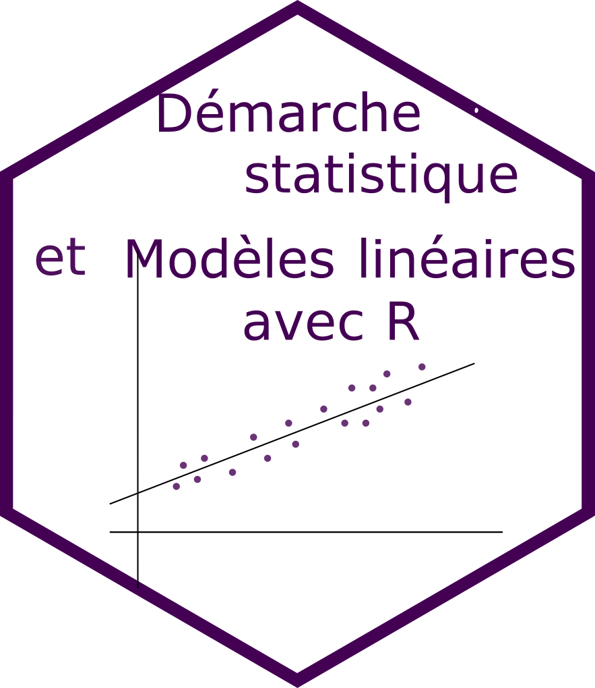
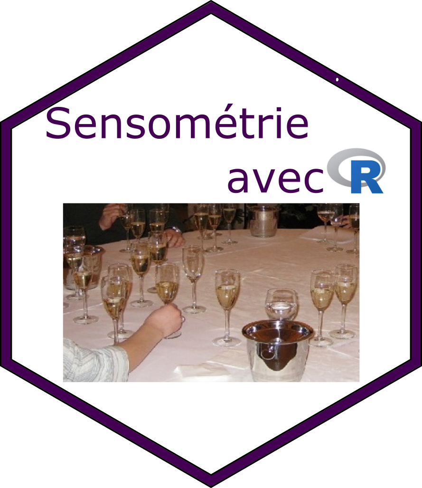
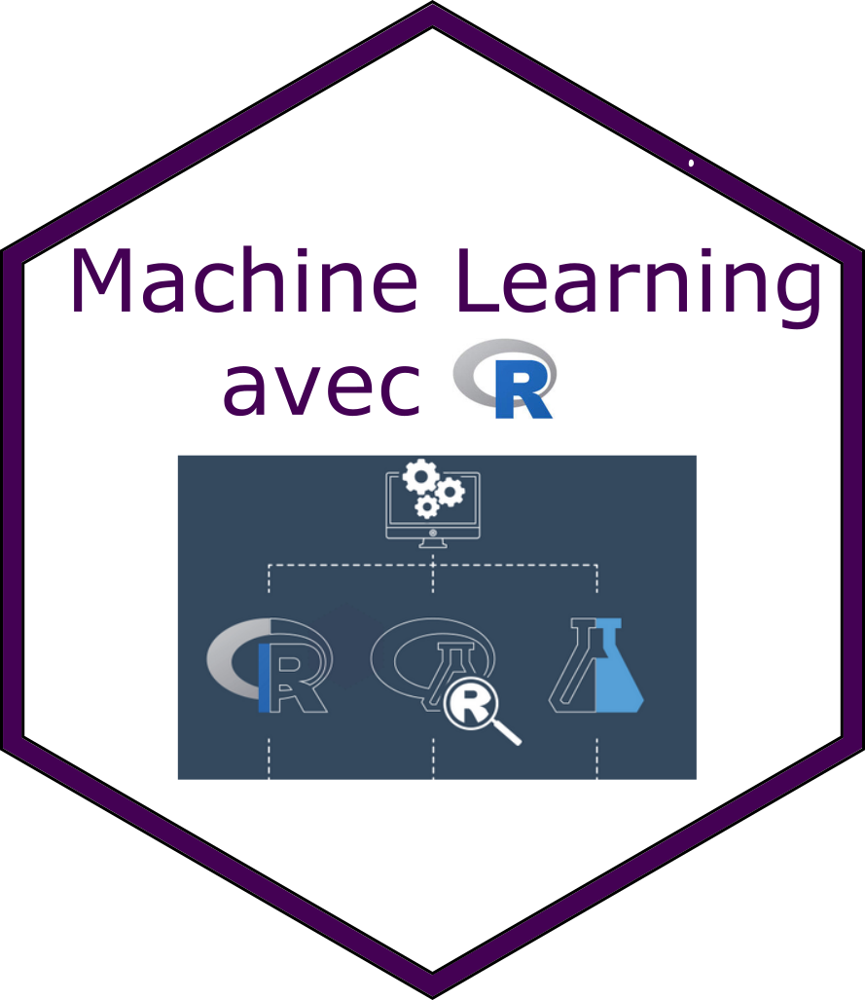

Présentation
L’équipe
Les formateurs sont des enseignants chercheurs et des ingénieurs au sein du département Mathématique et Informatique d’Agrocampus Ouest. Ils participent tous à la formation initiale des étudiants ingénieurs et ont une activité de recherche dans le domaine des statistiques appliquées.
Les formations
 |
 |  |
 |
| Manipulation et visualisation de données | Démarche statistique et modèles linéaires avec R | Analyse de données | Sensométrie avec R |
|  | |||
| Machine learning avec R |
L’école
Les formations sont dispensées à Agrocampus Ouest, Rennes.